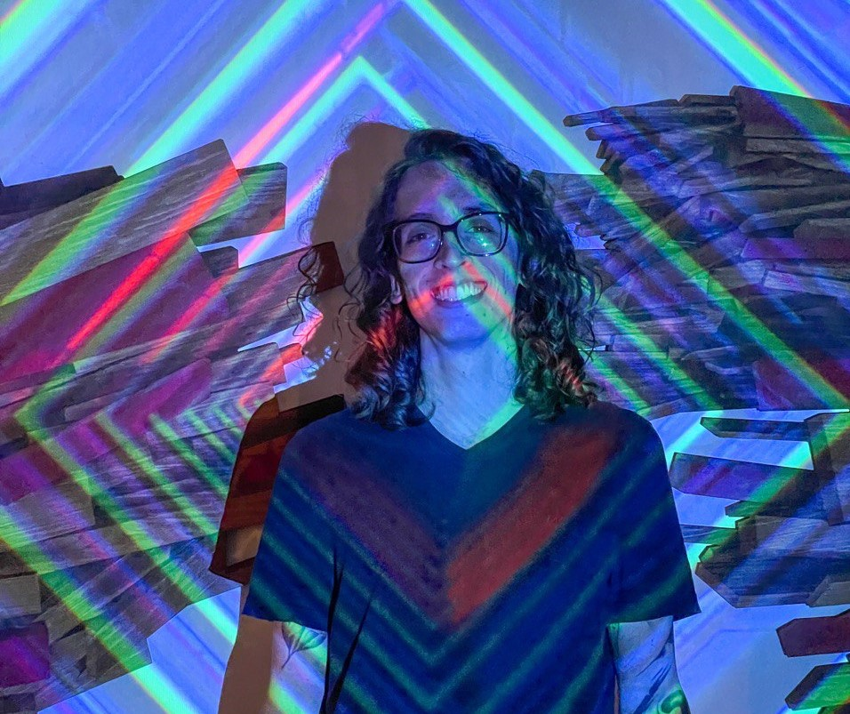

21 de julio : taller de visuales en TidalCycles Renzo Rospigliosi
¿Sabías que es posible generar música a partir de la escritura de código?
Te invitamos a explorar lenguajes y herramientas para la creación musical por medio de algoritmos y software libre.
En esta sesión aprenderemos a usar TidalCycles, una herramienta gratuita y abierta para hacer música escribiendo código en vivo. Conocerás el Live Coding y su uso a nivel mundial para realizar espectáculos musicales a partir de la improvisación y la tecnología. En este caso específico, se utilizará una versión web en que evita la necesidad de instalación. Además, es un entorno accesible que no requiere conocimientos previos en música ni en programación.
Requisitos:
- Una computadora con conexión a internet.
- Google Chrome (de preferencia).
Este taller está dirigido a artistas escénicos y audiovisuales interesados en incorporar la programación en su práctica artística, musicos, VJS, publico interesado en expandir sus posibilidades creativas desde el enfoque interdisciplinario.
- Inscripciones abiertas:
- hasta el 15 de julio 2022
- link de inscripción:
- https://forms.gle/qnbBYUeUxWmkaZ4X9
- Fechas del taller:
- 21 de julio 2022
- Horario:
- 4:00 a 7:00 pm
- Cupo:
- 15 participantes seleccionados que seran notificados por email
Taller gratuito online via plataforma Jitsi
Tallerista: Renzo Rospigliosi - Artista escénico intermedial. Licenciado en Teatro por la Pontificia Universidad Católica del Perú y actualmente cursando la Maestría en Artes Plásticas, Electrónicas y del Tiempo en la Universidad de los Andes en Bogotá. Ha presentado su trabajo a nivel internacional en espacios como el Elfreth’s Alley Museum en Philadelphia, el Centro Cultural de la PUCP en Lima y diversos festivales. Influenciado por la performance construye instalaciones, videoesculturas, piezas escénicas y sonoras utilizando lógicas computacionales y poniendo en tensión la relación humano-máquina. Es director del colectivo de improvisación interdisciplinaria “Sensáfona”, con quienes explora la relación entre las artes escénicas, el movimiento y la codificación en vivo.